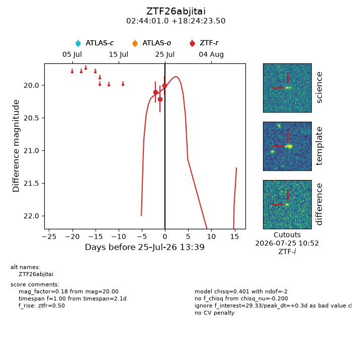
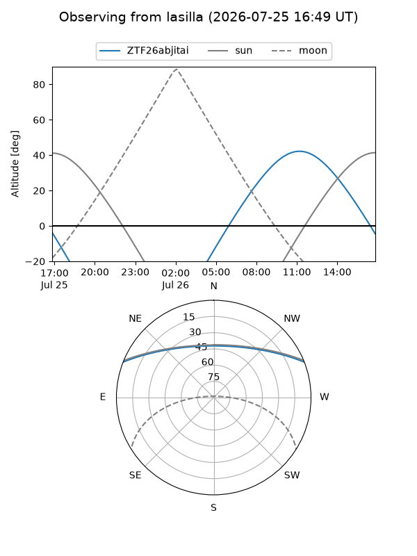
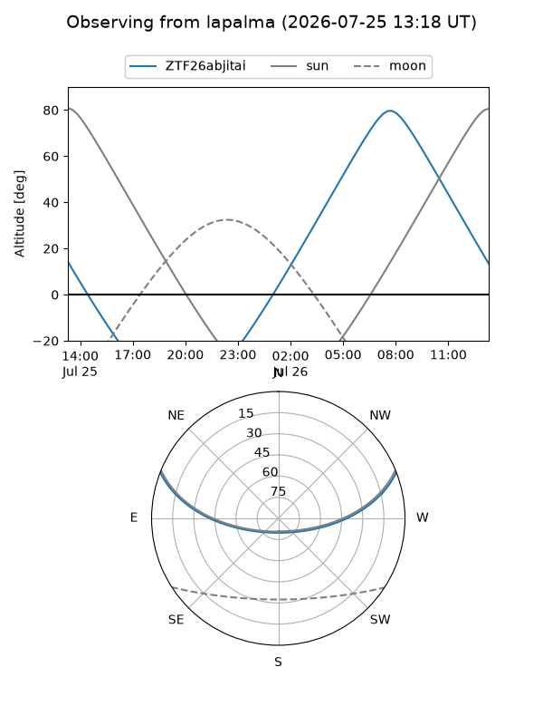
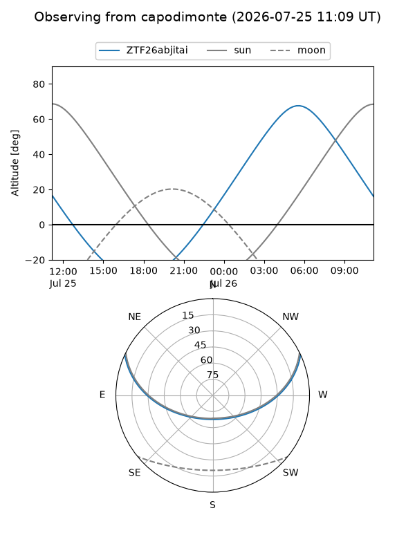
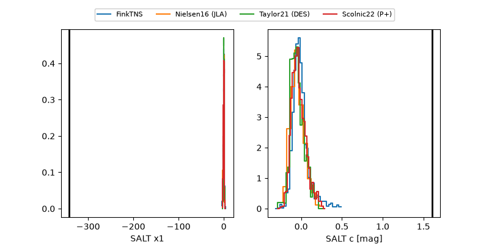

ZTF26abjitai
Target ZTF26abjitai at 2026-07-25 13:41
Aliases and brokers:
FINK-ZTF: ztf.fink-portal.org/ZTF26abjitai
Lasair-ZTF: lasair-ztf.lsst.ac.uk/objects/ZTF26abjitai
ALeRCE-ZTF: alerce.online/object/ZTF26abjitai
Direct TNS query: direct search
alt names
ZTF26abjitai (ztf,fink_ztf)
Coordinates:
equatorial (ra, dec) = 41.0040,+18.40653
equatorial (HMS+DMS) = 02:44:00.96,+18:24:23.50
galactic (l, b) = (156.9729,-36.91490)
Flags:
peak dt: +0.3
Photometry:
last ztfr=20.00
3 ztfr detections
Lightcurve

Visibility



Additional plots
